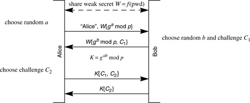
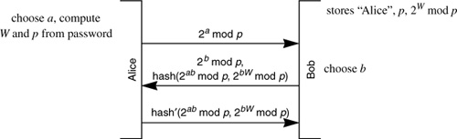
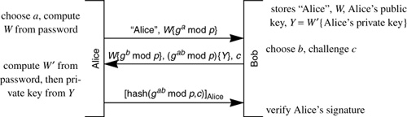
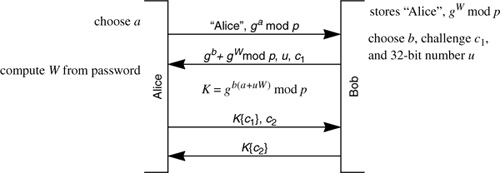

Networking Security Networking Security Networking Security Security Networking Security Networking Security Networking Charlie Kaufman Radia Perlman Mike Speciner Prentice Hall Network Security: Private Communication in a Public World, Second Edition
12.3. Strong Password Protocols
Strong password protocols are designed so that someone who eavesdrops on an authentication exchange, or someone impersonating either end will not obtain enough information to do off-line verification of password guesses. An eavesdropper should not be able to gain any information from observing any number of legitimate exchanges. Someone impersonating either endpoint will be able to do a single on-line password guess. There's really no way to avoid that. If someone correctly guesses the password, they will be able to successfully authenticate. If they guess incorrectly, they will know that they have not successfully authenticated, and therefore their guess must not be the user's password. A false guess will result in an authentication failure, which should generate alarms if they occur in large numbers.
12.3.1. The Basic Form
Bellovin and Merritt created the first strong password protocol. They called it EKE for encrypted key exchange. There are other protocols, but they are all conceptually similar. The idea of EKE is that Alice and Bob share a weak secret W, which is a hash of Alice's password. Bob knows W because he stores W. Alice knows W because she computes it from the password.
They do a Diffie-Hellman exchange, encrypting the Diffie-Hellman numbers with W, and then do mutual authentication based on the agreed-upon Diffie-Hellman shared secret, which is a strong secret.
This protocol is quite subtle. The reason it is secure from an eavesdropper is that a Diffie-Hellman transmitted value looks like a random number. An eavesdropper doing a trial decryption of W{ga mod p} and W{gb mod p} cannot verify a password guess because decrypting with any password will still just look like random numbers. And someone impersonating one side or the other can verify a single password guess as incorrect or correct, but this is an on-line, auditable guess. There is no way to do an off-line dictionary attack. The Diffie-Hellman secret K is a strong secret because an attacker would both have to guess the password and break Diffie-Hellman.
The reason it is secure from someone, say Trudy, impersonating Alice or Bob is that Trudy only knows x for one value of gx mod p. Once Trudy encrypts with W, she is committing to a single password guess. (See Homework Problem 14.)

Several years later, more or less simultaneously, two other strong password protocols were invented. One was done by Jablon, and was called SPEKE (simple password exponential key exchange), and the other was done by Wu and known as SRP (secure remote password). We'll describe SRP in section §12.3.4 SRP (Secure Remote Password). Several years after SRP and SPEKE, we1,2 designed PDM (password derived moduli).
SPEKE uses W in place of g in the Diffie-Hellman exchange, so rather than transmitting W{ga mod p} and agreeing upon K = gab mod p (as would be done in EKE), SPEKE transmits Wa mod p and Wb mod p, and agrees upon the key K = Wab mod p.
PDM chooses a modulus p which is a function of the password, and uses 2 as the base, so the Diffie-Hellman numbers transmitted are 2a mod p and 2b mod p, and the agreed-upon Diffie-Hellman key is 2ab mod p.
12.3.2. Subtle Details
There is more to making these schemes secure than the basic idea. The original EKE paper proposed many variants of the protocol, many of which were later found to be flawed. The successor protocols have had similar difficulties. To be secure, a protocol must carefully specify some implementation details to avoid an eavesdropper being able to eliminate password guesses. Subsequent papers noted other potential implementation issues. For instance, assume a straightforward encryption of ga mod p with W. Since ga mod p will be less than p, an eavesdropper that does a trial decryption with a guessed password and obtains a value greater than p can eliminate that password. If p were just a little more than a power of 2, an incorrect password would have almost a 50% chance of being eliminated. Each time an eavesdropper saw a value W{ga mod p} (each time presumably with a different a), the eavesdropper could eliminate almost half of the passwords. With a dictionary of, say, 50000 potential passwords, the eavesdropper would only need to see about twenty exchanges before narrowing down the possibilities in the dictionary to a single choice.
If SPEKE were not designed carefully it would also have a flaw whereby an eavesdropper might be able to eliminate some password guesses based on seeing Wa mod p. The flaw can be eliminated by making sure that W is a perfect square mod p. Some numbers are generators mod p (g is a generator if g1, g2, g3,...gp-1 mod p cycles through all the values from 1 through p-1). If g is a generator mod p, then its even powers are the perfect squares mod p (so half of all numbers mod p are perfect squares, and any power of a perfect square is also a perfect square). If some of the Ws generated from passwords for use in SPEKE were perfect squares and some not, then if an eavesdropper Trudy saw a value Wa mod p that was not a perfect square, she would know that none of the passwords that resulted in Ws that were perfect squares could have been Alice's password (since such a password could not have generated a value that was not a square). (To tell if a number is a perfect square mod p, raise it to the power (p-1)/2 and see if the result is 1 (mod p).) This is a less serious vulnerability than the EKE vulnerability in the previous paragraph, because in each EKE exchange a different half of the passwords could be eliminated. But in this SPEKE vulnerability, half the passwords (the ones for which W would be a square) would be eliminated if a value Wa mod p that was not a perfect square were seen by an eavesdropper, but there would be no further narrowing down the possibilities no matter how many exchanges were observed.
Both the vulnerabilities mentioned are easily avoided. The EKE vulnerability is avoided by choosing a p which is just a little less than a power of 2. The SPEKE vulnerability is avoided by ensuring that W is a perfect squareÂhash the password, then square it mod p to get W.
To build a workable protocol from the basic idea of PDM (generating the modulus deterministically from the password with reasonable performance) involves some math that we won't go into in detail because it's not that important for the purpose of this chapter. (For subtle reasons, using 2 for g, the modulus p has to be a safe prime, i.e. (p-1)/2 must also be prime, and p must be equal to 11 mod 24.) And there are other attacks that need to be avoided, including timing attacks and the attack in Homework Problem 6.
PDM has interesting performance characteristics. Generating an appropriate prime is very compute-intensive for the client machine (a few seconds). But since the modulus is secret, it is likely that the prime can be smaller than would be considered in traditional Diffie-Hellman, since Diffie-Hellman would have to be broken for each password guess, for each user. If this premise survives scrutiny, PDM can be much more efficient (a factor of about five) for the server. Server performance is more important than client performance because the compute-intensive step of generating the PDM modulus only has to be done once at the client, whereas a server has to process a large and unpredictable number of login attempts.
12.3.3. Augmented Strong Password Protocols
With the schemes in the previous section, if someone knew W, they could impersonate the user. A few years after publishing EKE, Bellovin and Merritt designed a strong password protocol with an additional security property which they called augmented EKE. The additional property was preventing someone who has stolen the server database from being able to impersonate the user. The information in the server database would allow an attacker, Trudy, to do a dictionary attack, and if Trudy found the user's password, then she could impersonate the user. But using an augmented form of a strong password protocol, if Trudy's dictionary attack on the stolen server database was unsuccessful, she would not be able to impersonate the user to the server.
All the basic schemes (EKE, SPEKE, and PDM) can be modified to have the augmented property. Another protocol which we'll describe (SRP) only has an augmented form. The idea is for the server to store a quantity derived from the password that can be used to verify the password, but the client machine is required to know the password (not the derived quantity stored at the server). The scheme in augmented EKE is overly complicated and takes too many messages, so we will instead show a simple scheme with the same properties. The strategy will work with any of the schemes (EKE, SPEKE, and PDM), but we'll show it with PDM.
The server will store p, the safe prime derived from the user's password. The server will also store 2W mod p, where W is a hash of the user's password. The exchange is as follows:

Bob can compute hash(2ab mod p, 2bW mod p) because he knows b, 2a mod p, 2W mod p, and p. So he can raise each of 2a mod p and 2W mod p to the power b, mod p. Similarly, Alice can compute hash'(2ab mod p, 2bW mod p) (see Homework Problem 8).
In the PDM paper we1,2 recommend a form of augmentation that is higher performance for the server. Instead of requiring the server to do an additional Diffie-Hellman exponentiation to achieve the augmented property, the server does an RSA verify operation, which is much less expensive. This is accomplished by having Bob store, for Alice, an RSA private key encrypted with Alice's password, and the corresponding public key. Again, this can be done with any of the basic schemes (EKE, SPEKE, or PDM), but in Protocol 12-4 we'll show it using EKE:

In Protocol 12-4, Bob stores Y, which is Alice's private key encrypted with a function of her password. (Note that it has to be a different hash of the password than W, or else someone that stole the server database would be able to obtain her private key, which breaks the augmented property.) Bob also stores Alice's RSA public key corresponding to the encrypted private key. In message 1, Alice sends the usual first EKE message, consisting of her Diffie-Hellman value encrypted with W. In message 2, Bob sends his Diffie-Hellman value, along with Y (Alice's encrypted private key), encrypted with the agreed-upon Diffie-Hellman key. Alice extracts Y by decrypting with gab mod p, and then decrypts Y with her password to obtain her private key. In message 3, Alice signs a hash of the Diffie-Hellman key and the challenge c, and Bob verifies her signature using the stored public key. This achieves mutual authentication as well as the augmented property (see Homework Problem 9).
12.3.4. SRP (Secure Remote Password)
SRP was invented by Tom Wu [WU98] and is a popular choice by the IETF for strong password protocols. It is documented in RFC 2945. It is harder to understand than the others, but we describe it here because it does appear in many IETF protocols. Unlike EKE, SPEKE, and PDM, there is no basic form of SRP. The augmented property is an intrinsic part of the protocol.
SRP is Protocol 12-4. Bob stores gW mod p, where W is a function of Alice's password. Alice calculates W from the password. The tricky part is how Alice and Bob each manage to compute the session key K (see Homework Problem 11).

|